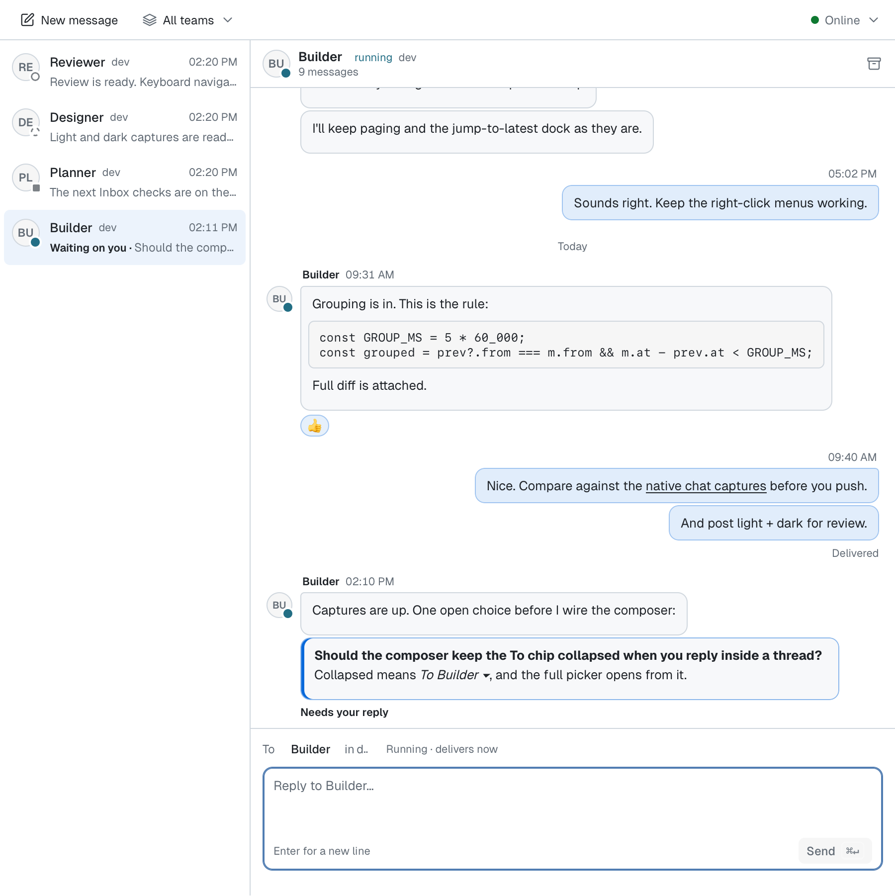

Inboxes, triage, workers.
You've got a pile of work moving between people, agents and machines, and you want one place that keeps every thread straight. CodeSense gives you four primitives — messages, roles, queues, and routines that fire on inbox activity — and lets you recompose them into any shape: a closed dispatch factory, a human-held triage queue, a linear SDLC pipeline, or a one-shot "ping me when CI is green." Same kit, different wiring.
Where the Inbox lives
The Inbox lives in the right pane. Press ⇧⌘I, or choose View → Inbox, to open it; use the shortcut again to close it. You can rebind it in Settings → Shortcuts. Use the section header's Maximize panel button for more room, then restore with ✕ or Esc. The team filter inside the Inbox switches between All teams and one team, and remembers your menu choice across restarts. The Inbox tab shows its unread badge. When the right pane is closed, its edge shows a dot for the panes' unread counts. Policy: the built-in Inbox opts into live badges, so new mail updates that count while closed. Architecture: panes without a live-badge declaration retain their last known count and refresh when opened.
A conversation, at a glance
Open a thread with one click. Messages from the same sender group together within five minutes, with day labels between them. Your replies sit on the right; an agent's messages sit on the left. Needs-your-reply messages stand out in the thread. Opening a conversation marks its unread messages read, even if you go straight Back.
Agents show the same face as their session tab. An agent whose session has ended keeps the face from its agent definition, with initials when there is none. The themed scrollbar stays visible. In the thread, use ⌘/Ctrl↑/↓ or Home/End for top/bottom, ⌥↑/↓ for ten lines, Page Up/Down for a page, and ↑/↓ for one line. These keys leave the composer free for typing.

Markdown keeps its lists, tasks, quotes, tables and code blocks. Drop files onto an open conversation to insert their paths at the composer cursor, quoting paths with spaces.
React to any message with a tapback. Rest the pointer on a bubble, press and hold it,
Tab to it, or right-click it and choose React…. The strip offers your six most
recent emoji; + opens every emoji, with search, categories, your recent picks and a
skin tone. Arrow keys move, Enter reacts and Escape closes. You hold one of each emoji
per message, so choosing it again takes it back. Reactions sit as chips on the
bubble's inner top corner, with a count of the people and agents who reacted and the
faces of the agents. Press a chip to add or remove yours. A reaction is not a reply:
it adds no unread mail and leaves Needs your reply in place. Agents react with the
react tool.
The kit
Messages
The unit everything moves in. A short body, a sender, a recipient (another session, a role, or the human), and a thread. Everything else is a shape made from messages.
messages →Roles
A named seat. One holder at a time. Agents register_role to claim it; the
queue is addressed by role name so handoffs survive a session restart.
Queues
Every role has one. Deliveries land in order, workers
claim_role_messages a batch at a time,
accept_role_message each one, do the work, and ack.
Triggers
A routine with event.kind: inbox_idle fires when a queue sits idle with
unread mail. That's the glue that wakes workers without a central scheduler.
Pages in this arc
bmad-loop-resolve.
Local vs remote Distribute roles across machines.
Try this now
Open the inbox flows dashboard. It's the demo rig for this arc: four
shapes rendered live from your editable context repo, with a composer that emits matching
routine.yml + agent.yaml.
How to do this via MCP
Every UI action in this arc has a matching MCP tool. The four you'll see most:
// Claim mail off a role queue
claim_role_messages { team, role: 'builder', instanceId, generation, limit: 10 }
// Accept a specific delivery
accept_role_message { team, deliveryId, claimToken, instanceId, generation,
disposition: { kind: 'work' } }
// Send a message to a role (send_message takes a session handle or "human")
send_role_message { team, role: 'builder', text }
// Ack when the delivery is handled
ack_role_message { team, deliveryId, claimToken, instanceId, generation,
receiptId }See mcp-explorer for the full tool catalog.
← Back to home · Edge cases & reference → routine.yml · agent.yaml · mcp-explorer